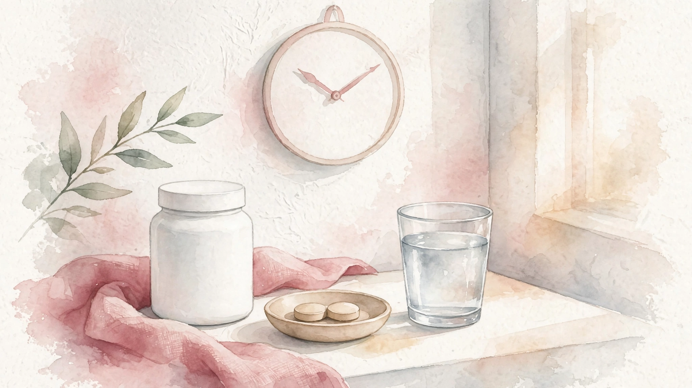

トップ ＞ インナーケア・サプリ ＞ 1日の目安量と飲むタイミングの考え方
1日の目安量と飲むタイミングの考え方

サプリメントのパッケージには、「1日◯粒を目安に」という表示があります。では、その◯粒をいつ飲むのか。表示にタイミングの案内があるものと、ないものがあります。この記事では、目安量の読み方と、タイミングの決め方の一般的な考え方を整理します。
目安量は「1日分」の単位で読む
まず大切なのは、目安量が「1回分」なのか「1日分」なのかを確認することです。多くの商品は1日分を単位に表示していますが、「1日2回、1回2粒」のように、回数と粒数が分かれている案内もあります。含有量の表示も、1粒あたりなのか1日分あたりなのかで意味が変わります。読み違いを防ぐために、最初に単位を確認する習慣をつけておくと安心です。
目安量は、その商品の設計の前提になっている数字です。食品ではありますが、表示の目安を大きく超えて摂ることは想定されていません。「多めに摂ればよい」という考え方は、食品であっても当てはまらない、と私は考えています。
タイミングは、生活の流れに合わせる
パッケージに「食事の前」「食後」といった案内がある場合は、それに従うのが基本です。案内がない場合は、毎日続けられるタイミングを自分で決めます。朝食の後、夕食の後、歯磨きの前など、すでにある習慣にくっつけるのが続けやすい方法です。
施術のお客様と話していても、続いている方に共通するのは「時間を決めている」ことです。逆に、「思い出したときに飲む」という方は、残量が減らずに賞味期限が近づいてしまうことが多いようです。
数え方の工夫：残量を見える化する
目安量を守るための工夫として、1週間分の小さなケースに移し替える方法があります。飲んだかどうかが目で見て分かり、飲み忘れや重なって飲むことを防ぎやすくなります。移し替えるときは、元のパッケージの表示（目安量や賞味期限）が分かるように、写真を撮っておく、ケースに日付を書く、といった管理を添えると確実です。
サプリメントは食品であり、身体への作用を断定するものではありません。この記事は表示の読み方と続け方の一般的な案内です。体調に不安がある方、医薬品を服用中の方は、医師・薬剤師等の専門家にご相談ください。
旅行や外食が続く日は、タイミングが崩れやすいものです。そういう日は、無理に普段どおりに合わせようとせず、帰宅後の決まった行動にくっつけるなど、その日の流れの中で置き場所を決め直す方が現実的です。数日崩れたからといって、慌ててまとめて摂ることはしないでください。目安量は1日単位の設計です。
セラフィナ「タイミングは、毎日続けられる場所と時間に置くのがいちばんだね」

セラフィナ｜美容の道具箱の案内役
「量と表示が分かれば、美容は失敗しない。」——セラフィナと白猫のモコが、買う前のチェックポイントを案内します。綺麗になりたい気持ちに正直に、でも表示は冷静に読むのが、このサイトの約束です。